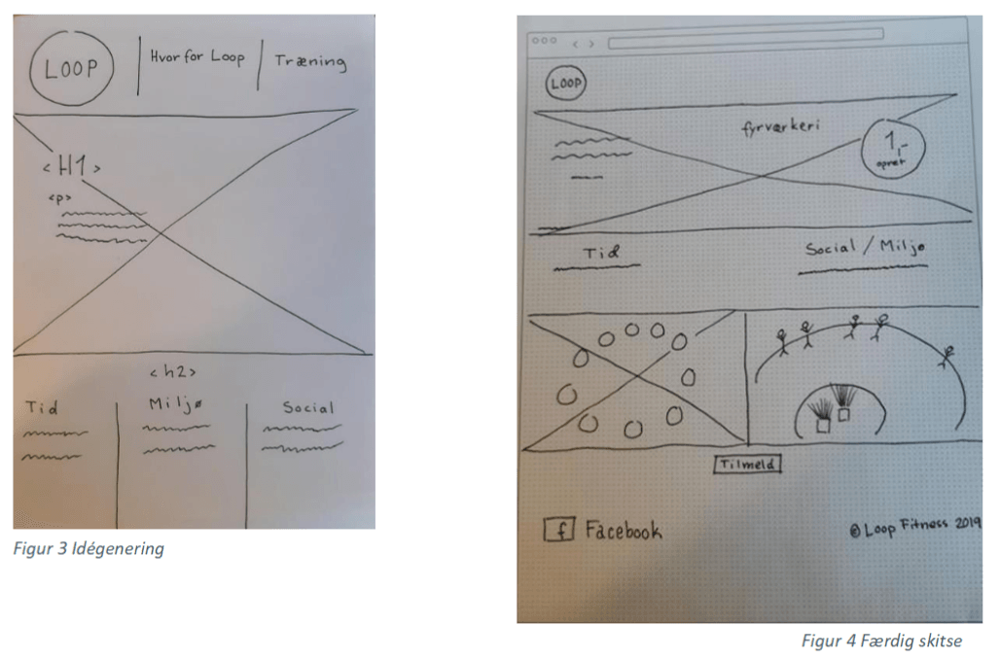
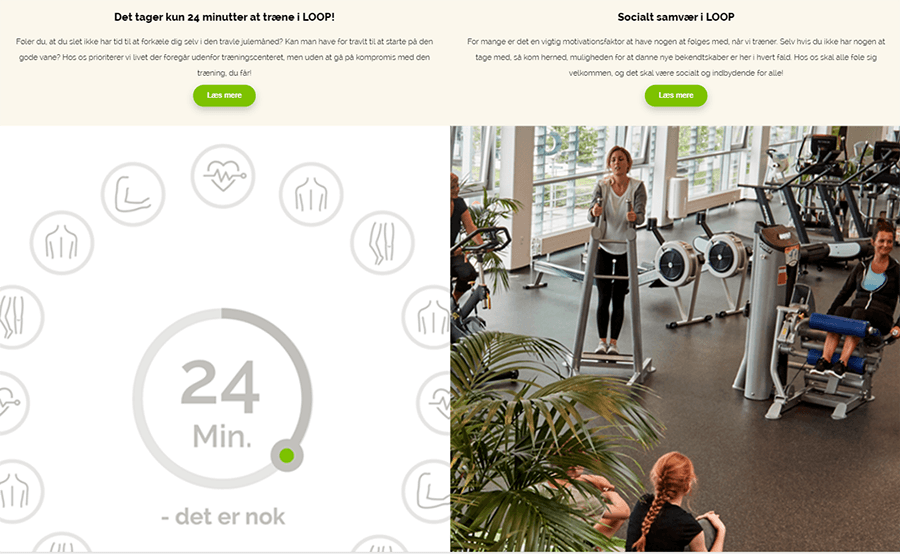
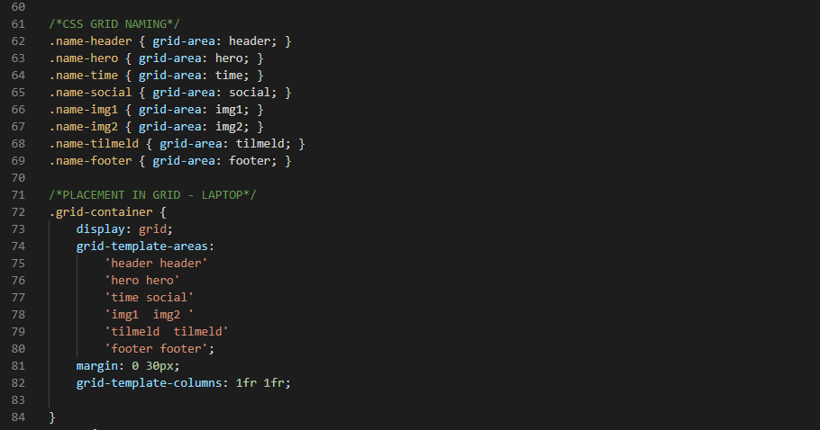

Loop Fitness
Se løsningen herOpgaven
Opgaven er lavet i 1. semester, og var den tredje opgave jeg lavede på studiet.
Jeg fik med mine medstuderende til opgave at udvikle et microsite til Loop Fitness, i forbindelse med en kampagne for deres fitnesscenter i Svenstrup.
Formålet med kampagnen var at få folk til at tilmelde sig, før nytår, så der var her også et fokus på måden vi kunne få folk ind før nytår.

Analyse og design
Vi startede med at lave en kategorisering, for at finde frem til målgruppen af Loop Fitness kunder, hvor vi derefter interviewede dem og analyserede det efterfølgende. Her fandt vi frem til nogle fokuspunkter til micrositet, som vi derefter havde med til næste step, hvor vi begyndte at idégenerere. Her sketchede vi forskellige muligheder, igen med tanke på de punkter vi fandt frem til i brugerundersøgelsen. Derefter lavede vi mockups og lavede dertil tekstforfatning og fandt passende billeder.

Realisering
Kodningsarbejdet blev løst ved brug af HTML og CSS.
Med mockups i hånden, gik vi i gang med at kode og lavede her et overordnet grid som kunne bruges til begge sider.
Se løsningen her
